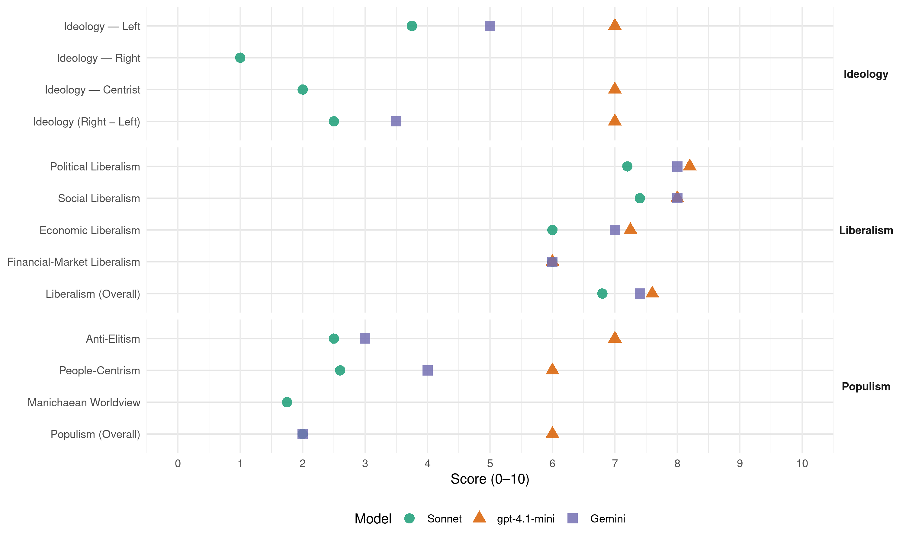

PS (Portugal, 2005)
manifesto_id 35311_200502
Get full text: This site shows derived annotations and short verbatim quotes only. The full manifesto text is © Manifesto Project / WZB — obtain it via manifesto-project.wzb.eu using the manifesto_id above.
Headline scores
| Dimension | Sonnet | gpt-4.1-mini | Gemini |
|---|---|---|---|
| Populism (Overall) | 2.0 | 6.0 | 2.0 |
| Anti-Elitism | 2.5 | 7.0 | 3.0 |
| People-Centrism | 2.6 | 6.0 | 4.0 |
| Manichaean Worldview | 1.8 | – | – |
| Ideology (Right − Left) | 2.5 | 7.0 | 3.5 |
| Liberalism (Overall) | 6.8 | 7.6 | 7.4 |
| Political Liberalism | 7.2 | 8.2 | 8.0 |
| Social Liberalism | 7.4 | 8.0 | 8.0 |
| Economic Liberalism | 6.0 | 7.2 | 7.0 |
| Financial-Market Liberalism | 6.0 | 6.0 | 6.0 |
Evidence per dimension
Economic Liberalism
Gemini · score 7.0 · verified · chunk 1
“estimulando a concorrência, garantindo a regulação”
desburocratizando e criando um bom ambiente de negócios, estimulando a concorrência, garantindo a regulação e melhorando
Gemini · score 5.0 · mixed · chunk 2
“regulação pelo mercado”
desenvolvimento economicista e assente nas fórmulas mágicas da regulação pelo mercado, não sejam apenas
Gemini · score 7.0 · verified · chunk 3
“abertura à concorrência do sector da energia”
adopção de modelos ineficientes de organização de sectores ou empresas. A abertura à concorrência do sector da energia é essencial para gerar maior capacidade competitiva nos
Gemini · score 7.0 · verified · chunk 4
“aumentar a concorrência e a oferta de serviços”
eventuais situações lesivas dos interesses dos utilizadores e a aumentar a concorrência e a oferta de serviços, mas também de forma
Gemini · score 7.0 · verified · chunk 5
“Estimular a actividade empresarial no seio”
novos modelos de políticas activas. Estimular a actividade empresarial no seio das comunidades portuguesas, encarando-a numa perspectiva
gpt-4.1-mini · score 7.0 · verified · chunk 1
“estimular a concorrência, garantir a regulação”
Para a competitividade das empresas é importante fomentar o desenvolvimento de uma cultura de concorrência assente em “regras do jogo” claras, transparentes e iguais para todos. Importa, para tanto, assegurar uma aplicação estrita da legislação da concorrência.
gpt-4.1-mini · score 7.0 · verified · chunk 2
“a política de vagas no ensino público, de modo a diminuir as barreiras administrativas ao ingresso”
Portugal tem dos mais baixos níveis de diplomação da Europa; e aumentar as qualificações académicas e profissionais dos portugueses continua a ser um factor essencial da nossa modernização económica, social e tecnológica. Por isso, para além de investir prioritariamente nas áreas da saúde (dando cumprimento ao plano estratégico acordado em 2001 com as instituições) e das tecnologias (actuando no ensino secundário de modo a conquistar mais candidatos para os cursos de engenharia), o Governo do PS alterará a política de vagas no ensino público, de modo a diminuir as barreiras administrativas ao ingresso (numerus clausus) e a adequar a oferta de vagas ao andamento da procura dos cursos pelos estudantes e das qualificações respectivas por parte do tecido económico e social, sem nunca esquecer a relevância científica e cultural das formações.
gpt-4.1-mini · score 8.0 · verified · chunk 3
“liberalização do mercado da electricidade”
Dar um novo impulso à liberalização do mercado da electricidade, em todos os seus segmentos (produção, distribuição, comercialização) e antecipar o calendário de liberalização do mercado do gás natural, aumentando a penetração desta fonte de energia no território e dando nova competitividade às empresas e uma oportunidade de desenvolvimento a algumas zonas do País.
gpt-4.1-mini · score 7.0 · verified · chunk 4
“reforma do sistema de financiamento das autarquias”
O Governo do PS tomará a iniciativa de promover uma reforma do sistema de financiamento das autarquias, incidindo de modo especial nos critérios de repartição da transferência anual do Orçamento do Estado; no quadro de taxas, tarifas e preços e, finalmente, no regime de recurso ao crédito. Esta reforma incluirá as modificações necessárias a tornar os municípios menos dependentes das receitas oriundas da construção civil, sem afectar os actuais níveis globais de financiamento, bem como a receita pública.
Sonnet · score 6.0 · verified · chunk 1
“estimulando a concorrência, garantindo a regulação”
desburocratizando e criando um bom ambiente de negócios, estimulando a concorrência, garantindo a regulação e melhorando a governação societária
Sonnet · score 6.0 · verified · chunk 2
“competitividade empresarial”
articulação do reforço da competitividade com a equidade social. Em diversos aspectos, representou mesmo um retrocesso nos direitos laborais
Sonnet · score 6.0 · mixed · chunk 3
“abertura à concorrência do sector da energia é essencial”
A abertura à concorrência do sector da energia é essencial para gerar maior capacidade competitiva nos operadores portugueses de energia e para melhor servir os interesses dos consumidores
Sonnet · score 6.0 · verified · chunk 4
“liberalização e transparência dos mercados”
através da sua acção diplomática e da criação de um conjunto de regras claras, estáveis e simples (fiscais, institucionais, garantias dos direitos de propriedade, liberalização e transparência dos mercados)
Sonnet · score 6.0 · verified · chunk 5
“Estimular a actividade empresarial”
Estimular a actividade empresarial no seio das comunidades portuguesas, encarando-a numa perspectiva estratégica de parcerias
Financial-Market Liberalism
Gemini · score 6.0 · verified · chunk 1
“duplicar os fundos de capital de risco”
criação de 200 novas empresas de base tecnológica; Duplicar os fundos de capital de risco para apoiar o lançamento
Gemini · score 6.0 · verified · chunk 2
“entidades privadas do sector financeiro”
levaremos a cabo a contratualização com entidades privadas do sector financeiro da gestão de uma fracção
gpt-4.1-mini · score 6.0 · verified · chunk 1
“incorporação na Caixa Geral de Aposentações (CGA) do fundo de pensões dos trabalhadores da Caixa Geral de Depósitos”
…e operações extraordinárias, algumas das quais com elevado impacto sobre orçamentos futuros ou custos consideráveis em termos da imagem do Estado português junto dos mercados financeiros, tal como a recente incorporação na Caixa Geral de Aposentações (CGA) do fundo de pensões dos trabalhadores da Caixa Geral de Depósitos.
Sonnet · score 6.0 · verified · chunk 1
“melhorar os canais de informação para o mercado”
de forma a melhorar os canais de informação para o mercado e a facilitar a participação dos accionistas na vida da empresa
Sonnet · score 6.0 · verified · chunk 2
“contratualização com entidades privadas do sector financeiro”
levaremos a cabo a contratualização com entidades privadas do sector financeiro da gestão de uma fracção das verbas do FEFSS, definindo regras muito rigorosas
Sonnet · score 6.0 · verified · chunk 3
“dinamização do mercado de arrendamento”
Esta iniciativa apostará na dinamização do mercado de arrendamento, por via do aumento da oferta de imóveis para arrendamento, da mobilidade e da promoção do acesso de famílias e agentes económicos a esse mercado.
Sonnet · score 6.0 · verified · chunk 4
“taxas de juro, e pelas empresas automóveis”
Esse indicador será do tipo dos que já são obrigatoriamente indicados pelas instituições financeiras e de crédito, quanto a taxas de juro, e pelas empresas automóveis, quanto ao crédito automóvel
Sonnet · score 6.0 · verified · chunk 5
“áreas industrial, tecnológica e financeira”
Desenvolvimento do Sector Empresarial na Área da Defesa, incluindo as áreas industrial, tecnológica e financeira
Political Liberalism
Gemini · score 8.0 · verified · chunk 1
“Elevar a qualidade da nossa democracia”
e coesão territorial seja, ela também, um factor de progresso do País; Elevar a qualidade da nossa democracia, reforçando a credibilidade
Gemini · score 8.0 · verified · chunk 2
“conhecimento das instituições democráticas”
estão a formação cívica, incluindo o conhecimento das instituições democráticas, o estímulo da participação
Gemini · score 8.0 · verified · chunk 3
“aprofundamento da democracia e na implementação”
combater constitui sempre um progresso no aprofundamento da democracia e na implementação dos direitos humanos. Por outro lado, é hoje
Gemini · score 8.0 · verified · chunk 4
“valores próprios da prática desportiva na sociedade livre e democrática”
prioritários a desenvolver, no respeito pelos valores próprios da prática desportiva na sociedade livre e democrática em que vivemos.
Gemini · score 8.0 · verified · chunk 5
“liberdade e da segurança dos cidadãos”
garantia da independência nacional, da integridade do espaço territorial, da liberdade e da segurança dos cidadãos e da salvaguarda dos interesses nacionais
gpt-4.1-mini · score 8.0 · verified · chunk 1
“Elevar a qualidade da nossa democracia, reforçando a credibilidade do Estado e do sistema político”
Elevar a qualidade da nossa democracia, reforçando a credibilidade do Estado e do sistema político e fazendo dos sistemas de justiça e de segurança instrumentos ao serviço de uma plena cidadania;
gpt-4.1-mini · score 8.0 · verified · chunk 2
“formação cívica, incluindo o conhecimento das instituições democráticas”
Assim, entre as múltiplas responsabilidades da escola actual estão a formação cívica, incluindo o conhecimento das instituições democráticas, o estímulo da participação cívica, a cultura da paz, a valorização da dimensão europeia, a capacidade empreendedora individual e de grupo, o diálogo entre civilizações e culturas; e o aprender a viver em conjunto, a educação para a saúde, para a sexualidade e os afectos, a prevenção contra o tabagismo e a toxicodependência.
gpt-4.1-mini · score 8.0 · verified · chunk 3
“a política para a igualdade de género na estrutura da governação”
uma política para a igualdade de género distingue-se assim das antigas políticas para a igualdade de oportunidades ao nível duma maior responsabilização do Estado pela sua concretização e promoção em toda a sociedade, pela dimensão ético-política da sua implementação, e pela perspectiva pró-activa e de mudança que assumem a intervenção política e as políticas públicas. Para além destes princípios orientadores, uma política para a igualdade de género assentará nos princípios da governação da Plataforma de Pequim (adoptada na V Conferência sobre as Mulheres das Nações Unidas em 1995): Centralidade da política para a igualdade de género na estrutura da governação.
gpt-4.1-mini · score 9.0 · verified · chunk 4
“a modernização global do sistema político”
A qualidade da democracia exige a credibilidade do espaço público, a modernização dos sistemas eleitorais, o reforço da autoridade democrática, o alargamento dos mecanismos de participação dos cidadãos, um claro sistema de controlos recíprocos e de separação de poderes entre as autoridades públicas, o reconhecimento do princípio da paridade, a intransigência ante os corporativismos profissionais e económicos e a adaptação aos novos desafios sociais e tecnológicos. O aperfeiçoamento da democracia não se reduz a reformas das instituições, mas implica um processo exigente de melhoria dos instrumentos de expressão e participação democráticas. Assim, o Partido Socialista defende uma modernização global do sistema político que: Valorize a intervenção dos cidadãos e das suas associações, através do alargamento do âmbito do referendo nacional e dos direitos de petição e de acção e iniciativa populares.
gpt-4.1-mini · score 8.0 · verified · chunk 5
“Portugal reitera a importância da organização na manutenção da legalidade, da ordem internacional e da Paz”
Na Organização das Nações Unidas, Portugal reitera a importância da organização na manutenção da legalidade, da ordem internacional e da Paz e afirma a centralidade do seu papel e a necessidade de reforço dos seus instrumentos nos processos de apoio à paz e de reconstrução pós conflito e de reconstituição de Estados falhados.
Sonnet · score 7.0 · verified · chunk 1
“Elevar a qualidade da nossa democracia”
Elevar a qualidade da nossa democracia, reforçando a credibilidade do Estado e do sistema político e fazendo dos sistemas de justiça e de segurança instrumentos
Sonnet · score 7.0 · verified · chunk 2
“conhecimento das instituições democráticas”
entre as múltiplas responsabilidades da escola actual estão a formação cívica, incluindo o conhecimento das instituições democráticas, o estímulo da participação cívica
Sonnet · score 7.0 · verified · chunk 3
“aprofundamento da democracia e na implementação dos direitos humanos”
constitui sempre um progresso no aprofundamento da democracia e na implementação dos direitos humanos. Por outro lado, é hoje claro que os países onde existem políticas activas de igualdade
Sonnet · score 8.0 · verified · chunk 4
“separação de poderes entre as autoridades públicas”
um claro sistema de controlos recíprocos e de separação de poderes entre as autoridades públicas, o reconhecimento do princípio da paridade, a intransigência ante os corporativismos
Sonnet · score 7.0 · verified · chunk 5
“manutenção da legalidade, da ordem internacional”
Portugal reitera a importância da organização na manutenção da legalidade, da ordem internacional e da Paz
Liberalism (Overall)
Gemini · score 7.0 · verified · chunk 1
“estimulando a concorrência, garantindo a regulação”
desburocratizando e criando um bom ambiente de negócios, estimulando a concorrência, garantindo a regulação e melhorando
Gemini · score 7.0 · verified · chunk 2
“igualdade entre mulheres e homens”
Uma organização social fundada na igualdade entre mulheres e homens e na efectiva possibilidade
Gemini · score 8.0 · verified · chunk 3
“aprofundamento da democracia e na implementação”
combater constitui sempre um progresso no aprofundamento da democracia e na implementação dos direitos humanos. Por outro lado, é hoje
Gemini · score 8.0 · verified · chunk 4
“valores próprios da prática desportiva na sociedade livre e democrática”
prioritários a desenvolver, no respeito pelos valores próprios da prática desportiva na sociedade livre e democrática em que vivemos.
Gemini · score 7.0 · verified · chunk 5
“liberdade e da segurança dos cidadãos”
garantia da independência nacional, da integridade do espaço territorial, da liberdade e da segurança dos cidadãos e da salvaguarda dos interesses nacionais
gpt-4.1-mini · score 7.0 · verified · chunk 1
“Elevar a qualidade da nossa democracia, reforçando a credibilidade do Estado e do sistema político”
Elevar a qualidade da nossa democracia, reforçando a credibilidade do Estado e do sistema político e fazendo dos sistemas de justiça e de segurança instrumentos ao serviço de uma plena cidadania;
gpt-4.1-mini · score 7.0 · verified · chunk 2
“formação cívica, incluindo o conhecimento das instituições democráticas”
Assim, entre as múltiplas responsabilidades da escola actual estão a formação cívica, incluindo o conhecimento das instituições democráticas, o estímulo da participação cívica, a cultura da paz, a valorização da dimensão europeia, a capacidade empreendedora individual e de grupo, o diálogo entre civilizações e culturas; e o aprender a viver em conjunto, a educação para a saúde, para a sexualidade e os afectos, a prevenção contra o tabagismo e a toxicodependência.
gpt-4.1-mini · score 8.0 · verified · chunk 3
“política para a igualdade de género na estrutura da governação”
uma política para a igualdade de género distingue-se assim das antigas políticas para a igualdade de oportunidades ao nível duma maior responsabilização do Estado pela sua concretização e promoção em toda a sociedade, pela dimensão ético-política da sua implementação, e pela perspectiva pró-activa e de mudança que assumem a intervenção política e as políticas públicas.
gpt-4.1-mini · score 8.0 · verified · chunk 4
“modernização global do sistema político”
A qualidade da democracia exige a credibilidade do espaço público, a modernização dos sistemas eleitorais, o reforço da autoridade democrática, o alargamento dos mecanismos de participação dos cidadãos, um claro sistema de controlos recíprocos e de separação de poderes entre as autoridades públicas, o reconhecimento do princípio da paridade, a intransigência ante os corporativismos profissionais e económicos e a adaptação aos novos desafios sociais e tecnológicos. O aperfeiçoamento da democracia não se reduz a reformas das instituições, mas implica um processo exigente de melhoria dos instrumentos de expressão e participação democráticas. Assim, o Partido Socialista defende uma modernização global do sistema político que: Valorize a intervenção dos cidadãos e das suas associações, através do alargamento do âmbito do referendo nacional e dos direitos de petição e de acção e iniciativa populares.
gpt-4.1-mini · score 8.0 · verified · chunk 5
“Portugal reitera a importância da organização na manutenção da legalidade, da ordem internacional e da Paz”
Na Organização das Nações Unidas, Portugal reitera a importância da organização na manutenção da legalidade, da ordem internacional e da Paz e afirma a centralidade do seu papel e a necessidade de reforço dos seus instrumentos nos processos de apoio à paz e de reconstrução pós conflito e de reconstituição de Estados falhados.
Sonnet · score 7.0 · verified · chunk 1
“superioridade do mercado como forma de organização”
O reconhecimento da superioridade do mercado como forma de organização da economia subentende, porém, a existência de mecanismos que zelem pelo seu adequado funcionamento
Sonnet · score 7.0 · verified · chunk 2
“igualdade de oportunidades entre homens e mulheres”
que promovam a redução da sinistralidade laboral e dos riscos profissionais e favoreçam a igualdade de oportunidades entre homens e mulheres
Sonnet · score 7.0 · verified · chunk 3
“aprofundamento da democracia e na implementação dos direitos humanos”
constitui sempre um progresso no aprofundamento da democracia e na implementação dos direitos humanos. Por outro lado, é hoje claro que os países onde existem políticas activas de igualdade
Sonnet · score 7.0 · verified · chunk 4
“separação de poderes entre as autoridades públicas”
um claro sistema de controlos recíprocos e de separação de poderes entre as autoridades públicas, o reconhecimento do princípio da paridade
Sonnet · score 6.0 · verified · chunk 5
“manutenção da legalidade, da ordem internacional”
Portugal reitera a importância da organização na manutenção da legalidade, da ordem internacional e da Paz
Anti-Elitism
Gemini · score 3.0 · verified · chunk 1
“gestão desastrada dos últimos três anos”
este pessimismo deve-se à falta de um rumo, à gestão desastrada dos últimos três anos, às promessas não cumpridas
Gemini · score 3.0 · verified · chunk 2
“desorientadas políticas neo liberais”
uma regeneração social e económica, face as recentes e desorientadas políticas neo liberais.
gpt-4.1-mini · score 7.0 · verified · chunk 1
“a forma desastrada como o País foi conduzido nos últimos três anos”
Sabemos todos, perfeitamente, que uma grande parte das dificuldades actuais se deve à forma desastrada como o País foi conduzido nos últimos três anos e à falta de credibilidade e estabilidade na governação.
Sonnet · score 3.0 · verified · chunk 1
“forma desastrada como o País foi conduzido”
uma grande parte das dificuldades actuais se deve à forma desastrada como o País foi conduzido nos últimos três anos e à falta de credibilidade
Sonnet · score 3.0 · verified · chunk 2
“desorientadas políticas neo liberais”
estratégia de intervenção qualificada, participada e articulada para o combate cívico, que se impõe, por uma regeneração social e económica, face as recentes e desorientadas políticas neo liberais
Sonnet · score 2.0 · verified · chunk 3
“política de energia do Governo PSD/PP, é hoje claro que esta política fracassou”
Ao fim de dois anos e meio de política de energia do Governo PSD/PP, é hoje claro que esta política fracassou. Para o PS, o Estado não deve nem substituir-se ao mercado
Sonnet · score 2.0 · verified · chunk 4
“intransigência ante os corporativismos profissionais e económicos”
o reconhecimento do princípio da paridade, a intransigência ante os corporativismos profissionais e económicos e a adaptação aos novos desafios
Ideology — Centrist
gpt-4.1-mini · score 7.0 · verified · chunk 1
“mobilizar os portugueses para um novo desígnio nacional”
O PS quer mobilizar os portugueses para um novo desígnio nacional. Um desígnio que mobilize o melhor de nós para que Portugal se volte a aproximar de forma decidida e sustentada do nível de desenvolvimento dos países mais avançados da União Europeia.
Sonnet · score 2.0 · verified · chunk 1
“Recuperar a confiança e mobilizar a capacidade dos portugueses”
Recuperar a confiança e mobilizar a capacidade dos portugueses para enfrentar dificuldades e rasgar novas fronteiras
Sonnet · score 2.0 · verified · chunk 2
“novo compromisso social mais flexível”
materializar – por lei, mas sobretudo por negociação colectiva - um novo compromisso social mais flexível e mais adaptado quer às exigências da qualificação
Sonnet · score 2.0 · verified · chunk 3
“responsabilidade partilhada entre o Estado, as autarquias”
deve haver uma responsabilidade partilhada entre o Estado, as autarquias, os parceiros sociais, as associações não governamentais em parceria com as próprias famílias
Sonnet · score 2.0 · verified · chunk 4
“participação dos cidadãos e das suas associações”
Valorize a intervenção dos cidadãos e das suas associações, através do alargamento do âmbito do referendo nacional e dos direitos de petição e de acção e iniciativa populares
Ideology — Left
Gemini · score 5.0 · verified · chunk 1
“dimensão das desigualdades e a intensidade da pobreza”
não são tudo: para nós, a dimensão das desigualdades e a intensidade da pobreza são problemas a recolocar
Gemini · score 5.0 · verified · chunk 2
“desorientadas políticas neo liberais”
uma regeneração social e económica, face as recentes e desorientadas políticas neo liberais.
gpt-4.1-mini · score 7.0 · verified · chunk 1
“a dimensão das desigualdades e a intensidade da pobreza são problemas a recolocar na agenda política”
Para o PS as questões da macroeconomia não são tudo: para nós, a dimensão das desigualdades e a intensidade da pobreza são problemas a recolocar na agenda política.
Sonnet · score 4.0 · verified · chunk 1
“desigualdade de rendimentos é maior”
Entre os países da União Europeia a quinze, Portugal é aquele em que a desigualdade de rendimentos é maior.
Sonnet · score 5.0 · verified · chunk 2
“combate à pobreza e exclusão”
fazer do combate à pobreza e exclusão uma das suas matrizes essenciais. Queremos um País em que as políticas sociais não sejam apenas o refúgio
Sonnet · score 3.0 · verified · chunk 3
“critérios de justiça social”
Consagração de políticas públicas determinadas por critérios de justiça social nomeadamente no que se refere à progressiva eliminação dos factores que afectam todas as famílias
Sonnet · score 3.0 · verified · chunk 4
“valorizar o modelo social europeu”
Impõe-se travar a tentativa de desvirtuamento neo-liberal da Estratégia de Lisboa, reafirmando a visão estratégica que a enforma, nas suas dimensões económica, social e ambiental, que mutuamente se reforçam, valorizando o modelo social europeu
Ideology (Right − Left)
Gemini · score 3.0 · verified · chunk 1
“dimensão das desigualdades e a intensidade da pobreza”
não são tudo: para nós, a dimensão das desigualdades e a intensidade da pobreza são problemas a recolocar
Gemini · score 4.0 · verified · chunk 2
“desorientadas políticas neo liberais”
uma regeneração social e económica, face as recentes e desorientadas políticas neo liberais.
gpt-4.1-mini · score 7.0 · verified · chunk 1
“a dimensão das desigualdades e a intensidade da pobreza são problemas a recolocar na agenda política”
Para o PS as questões da macroeconomia não são tudo: para nós, a dimensão das desigualdades e a intensidade da pobreza são problemas a recolocar na agenda política.
Sonnet · score 2.0 · verified · chunk 1
“políticas sociais que são mais do que políticas de coesão social”
o PS desenvolverá, no Governo, um amplo conjunto de políticas sociais que são mais do que políticas de coesão social, são igualmente passos imprescindíveis
Sonnet · score 4.0 · verified · chunk 2
“combate à pobreza e exclusão”
fazer do combate à pobreza e exclusão uma das suas matrizes essenciais. Queremos um País em que as políticas sociais não sejam apenas o refúgio
Sonnet · score 2.0 · verified · chunk 3
“critérios de justiça social”
Consagração de políticas públicas determinadas por critérios de justiça social nomeadamente no que se refere à progressiva eliminação dos factores que afectam todas as famílias
Sonnet · score 2.0 · verified · chunk 4
“desvirtuamento neo-liberal da Estratégia de Lisboa”
Impõe-se travar a tentativa de desvirtuamento neo-liberal da Estratégia de Lisboa, reafirmando a visão estratégica que a enforma
Ideology — Right
Sonnet · score 1.0 · verified · chunk 1
“valorizar a cultura e a língua portuguesa no mundo”
relançando a cooperação externa, valorizando a cultura e a língua portuguesa no mundo e construindo uma política de defesa adequada
Sonnet · score 1.0 · verified · chunk 2
“entre nacionais e imigrantes”
desigualdade de oportunidades – entre homens e mulheres, entre os vários tipos de emprego, entre nacionais e imigrantes - que reduzem a qualidade
Sonnet · score 1.0 · verified · chunk 3
“imigração legal e desencorajar a imigração irregular”
A regulação procurará encorajar a imigração legal e desencorajar a imigração irregular. Para tanto, urge recuperar mecanismos de flexibilização
Manichaean Worldview
gpt-4.1-mini · score 5.0 · mixed · chunk 1
“a situação é muito difícil”
É preciso dizer a verdade aos portugueses: a situação é muito difícil. Temos de resolver problemas que exigem um grande esforço e que não têm uma solução imediata.
Sonnet · score 2.0 · verified · chunk 1
“A coligação PSD/PP formou-se proclamando ir resolver”
A coligação PSD/PP formou-se proclamando ir resolver os principais problemas do país. A verdade é que os agravou.
Sonnet · score 3.0 · verified · chunk 2
“fraude política dos Governos PSD/PP”
À fraude política dos Governos PSD/PP, que foi a promessa de elevar as pensões mínimas para o nível do salário mínimo
Sonnet · score 1.0 · verified · chunk 3
“lei obsoleta e injusta”
confrontaram a nossa sociedade com uma lei obsoleta e injusta. O PS assume o compromisso de suscitar um novo referendo
Sonnet · score 1.0 · verified · chunk 4
“corrupção que mina os próprios fundamentos da democracia”
promovendo efectivamente a igualdade perante a lei e o combate à corrupção que mina os próprios fundamentos da democracia e vulnerabiliza a capacidade de atracção de investimento
People-Centrism
Gemini · score 4.0 · verified · chunk 1
“mobilizar os portugueses para um novo desígnio”
O PS quer mobilizar os portugueses para um novo desígnio nacional. Um desígnio que mobilize
Gemini · score 4.0 · verified · chunk 2
“apresenta ao povo português”
O Programa com que o Partido Socialista se apresenta ao povo português tem que ser, por isso mesmo
gpt-4.1-mini · score 6.0 · verified · chunk 1
“mobilizar os portugueses para um novo desígnio nacional”
O PS quer mobilizar os portugueses para um novo desígnio nacional. Um desígnio que mobilize o melhor de nós para que Portugal se volte a aproximar de forma decidida e sustentada do nível de desenvolvimento dos países mais avançados da União Europeia.
Sonnet · score 3.0 · verified · chunk 1
“mobilizar os portugueses para um novo desígnio nacional”
O PS quer mobilizar os portugueses para um novo desígnio nacional. Um desígnio que mobilize o melhor de nós para que Portugal se volte a aproximar
Sonnet · score 3.0 · verified · chunk 2
“ao povo português”
O Programa com que o Partido Socialista se apresenta ao povo português tem que ser, por isso mesmo, o repositório da esperança
Sonnet · score 3.0 · verified · chunk 3
“organização social seja pensada em função das pessoas”
O PS quer criar todas as condições para que a organização social seja pensada em função das pessoas, mulheres e homens, e dos seus diferentes tempos de vida.
Sonnet · score 3.0 · verified · chunk 4
“alargamento dos mecanismos de participação dos cidadãos”
o aperfeiçoamento da democracia não se reduz a reformas das instituições, mas implica um processo exigente de melhoria dos instrumentos de expressão e participação democráticas. Assim, o Partido Socialista defende uma modernização global do sistema político que: Valorize a intervenção dos cidadãos e das suas associações, através do alargamento dos mecanismos de participação dos cidadãos
Sonnet · score 1.0 · verified · chunk 5
“segurança dos cidadãos”
capacidade para garantir a Segurança do Estado e dos Cidadãos, mas, também, capacidades para projectar segurança
Populism (Overall)
Gemini · score 2.0 · verified · chunk 1
“gestão desastrada dos últimos três anos”
este pessimismo deve-se à falta de um rumo, à gestão desastrada dos últimos três anos, às promessas não cumpridas
Gemini · score 2.0 · verified · chunk 2
“apresenta ao povo português”
O Programa com que o Partido Socialista se apresenta ao povo português tem que ser, por isso mesmo
gpt-4.1-mini · score 6.0 · verified · chunk 1
“a forma desastrada como o País foi conduzido nos últimos três anos”
Sabemos todos, perfeitamente, que uma grande parte das dificuldades actuais se deve à forma desastrada como o País foi conduzido nos últimos três anos e à falta de credibilidade e estabilidade na governação.
Sonnet · score 2.0 · verified · chunk 1
“Portugal precisa de um rumo”
Portugal precisa de um rumo. Precisa de acreditar. Para isso é urgente combinar políticas de dois tipos.
Sonnet · score 3.0 · verified · chunk 2
“fraude política dos Governos PSD/PP”
À fraude política dos Governos PSD/PP, que foi a promessa de elevar as pensões mínimas para o nível do salário mínimo
Sonnet · score 2.0 · verified · chunk 3
“política de energia do Governo PSD/PP, é hoje claro que esta política fracassou”
Ao fim de dois anos e meio de política de energia do Governo PSD/PP, é hoje claro que esta política fracassou. Para o PS, o Estado não deve nem substituir-se ao mercado
Sonnet · score 2.0 · verified · chunk 4
“intransigência ante os corporativismos profissionais e económicos”
o reconhecimento do princípio da paridade, a intransigência ante os corporativismos profissionais e económicos e a adaptação aos novos desafios sociais e tecnológicos
Sonnet · score 1.0 · verified · chunk 5
“segurança dos cidadãos”
capacidade para garantir a Segurança do Estado e dos Cidadãos, mas, também, capacidades para projectar segurança
Social Liberalism